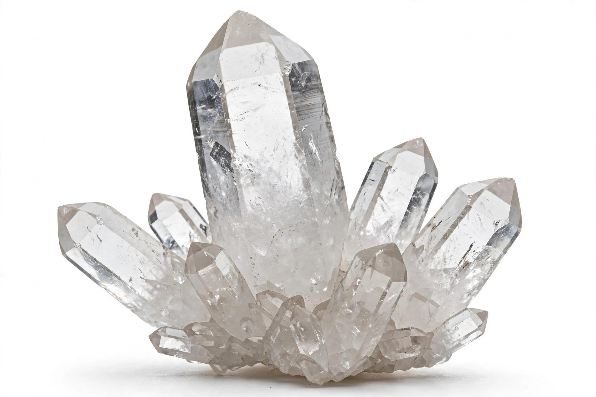

From Wikipedia, the free encyclopedia
| Tectosilicates | |
|---|---|
 Quartz, the archetypal tectosilicate | |
| Structure | Three-dimensional framework of SiO4 tetrahedra sharing all four oxygens |
| Key groups | Quartz group, feldspars, feldspathoids, zeolites, scapolites |
| Abundance | Framework silicates form the bulk of Earth's crust by volume |
Tectosilicates, or framework silicates, are the largest and most important class of silicate minerals, in which every silicon–oxygen tetrahedron shares all four of its corner oxygens with neighbouring tetrahedra, building a continuous three-dimensional framework. Because the framework carries the full Si:O ratio of 1:2 (when no substitution occurs), the simplest tectosilicate is silica itself — quartz, SiO2.
Aluminium commonly substitutes for silicon in tetrahedral sites. Each Al3+ replacing Si4+ leaves the framework one unit negatively charged, balanced by cations (Na+, K+, Ca2+) lodged in framework cavities. This substitution defines the feldspars — the most abundant mineral group in the Earth's crust — and, in silica-undersaturated rocks, the feldspathoids such as nepheline and leucite.
Sharing all oxygens makes the framework strong in all directions, so tectosilicates are hard (quartz is 7 on the Mohs scale) and typically lack a single dominant cleavage, though feldspars cleave well on two planes. Tectosilicates dominate igneous and metamorphic rocks and, as resistant quartz grains, most sands and sandstones as well.